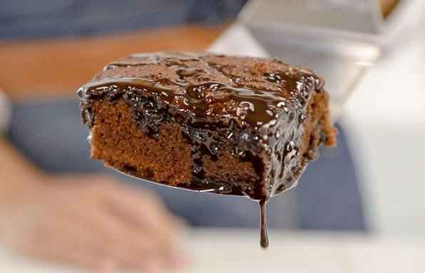
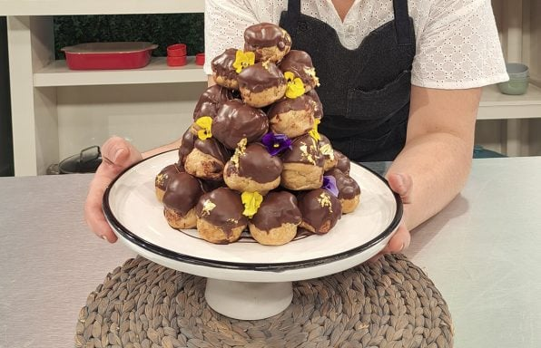

Un recetario dedicado a los más golosos

Brownies cerveceros
Una buena stout es el comienzo de una receta dulce diferente, con todo el sabor del chocolate y el toque cremoso original que le da la malta tostada.

Tarta de membrillo y coco
Hay que salir de lo tradicional y animarse a testear otros sabores a la hora de la merienda.

Tarta de mandarina
Sale esponjosa y se hace en un ratito: receta de Gabo Colacioppo

Tarta Rogel
Una buena stout es el comienzo de una receta dulce diferente, con todo el sabor del chocolate y el toque cremoso original que le da la malta tostada.

Alfajores santafecinos
Un clásico argentino que se puede hacer en casa sin ningún problema.

Croquembouche o torre de profiteroles
Todos los consejos para poder armar la famosa croquembouche en casa y sorprender a tus invitados

Mousse de chocolate
El postre clásico con el que podés sorprender a tu familia.